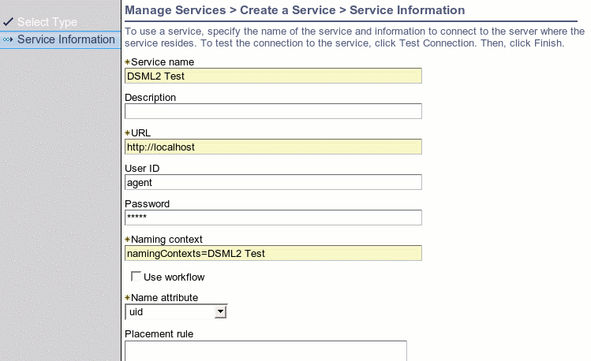

Directory Service Markup Language Version 2 JNDI Provider Example
The program DSML2DirContextTest.java
illustrates how to communicate with TIM using the Directory Service Markup
Language Version 2 (DSMLv2) Java Naming and Directory Interface (JNDI) provider.
Comments within the program describe it's logic and a description of
how to set up the supporting data files and run it is provided here.
Building the ExampleBuild the examples by following the instructions given in Building the Examples.
The build script will create the jar file ${TIM_HOME}/extensions/{RELEASE_VERSION}/lib/examples.jar.
This contains the class file for Java classes for this example.
The example is a stand-alone program so there are no changes required to the
application server to enable it to work.
Running the Example
Within the TIM user interface, add a service instance of type 'IDI Data Feed'.
This service type uses the DSMLv2 protocol to send and receive requests.
It is not actually necessary to use IBM Directory Integrator (IDI)
with it.
Enter the values for the service shown in Table 1.
Table 1 Parameters for TIM Server Instance
Name
|
Value
|
Description |
Service Name
|
<pick a name>
|
This name is purely descriptive and is for use in
the user interface.
|
URL
|
<arbitrary>
|
Although not used in this example, a non-null value
is required to conform with the schema. A value is required because
of the more common usage of service definitions to communicate outwardly from
TIM to a remote agent.
|
User ID
|
agent
|
This is the value for the principal used for authentication
of incoming requests.
|
Password
|
agent
|
This is the value for the password used for authentication
of incoming requests. |
Naming Context
|
namingContexts=DSML2 Test
|
This is used to identify the service to associate imported
data with. The value, including the single space between 'DSML2' and
'Test', must be a case-sensitive match to the value sent by the JNDI client
|
Use Workflow
|
Off (False)
|
This can be either on or off but it simpler to have
it off.
|
Name Attribute
|
uid
|
This is the attribute that will be used to do lookups
on. This should be unique for all people within TIM. If there
are multiple people found with the same value then an error will be returned.
|
An example screen shot is shown in Figure 1.

Figure 1 Screen Shot of Service Detail Form
Edit the file runJNDITest.cmd (runJNDITest.sh on unix) to set your java interpreter
and classpath correctly.
In the file test.properties, enter the
values shown in Table 2 to connect to the TIM server.
Table 2 Parameters for Connection to TIM Server
Name
|
Value
|
Description
|
java.naming.factory.initial
|
com.ibm.dsml2.jndi.DSML2InitialContextFactory
|
The factory class for the DSMLv2 JNDI implementation
provided with TIM.
|
java.naming.provider.url
|
http://<host>:<port>/itim/console/dsml2_event_handler
For example,
http://localhost:9080/itim/console/dsml2_event_handler
|
We will start with http and then try https later in
the example. The host is either the dns name or ip address of the machine.
The port is the port that the application server is listening on. The
path part of the url identities the web application and servlet.
|
java.naming.security.principal
|
agent
|
The user id entered in the service form definition.
|
java.naming.security.credentials
|
agent |
The user id entered in the service form definition. |
The value for the JNDI factory class com.ibm.dsml2.jndi.DSML2InitialContextFactory
leads to the instantiation of the DSMLv2 provider by the JNDI framework. This
provider transports DSMLv2 text directly over a HTTP or HTTPS transport.
Appropiate values for data are given in the file test_data.properties. This file
does not need to be modified but you should look at it to compare it to the
variables in the example code and the values inserted into the TIM data store
by the program.
To run the program use the command line parameters shown in Table 3.
Table 3 Command Line Parameters to run the example program. The description
column provides help to verify that the effect of the command within the TIM
user interface.
Table 3 Command Line Parameters to Run the Example
Program
Command Line
|
Description
|
runJNDITest -op add
|
Adds person with cn 'wilma flintstone' to TIM. Go
to My Organization | Manage People to check that Wilma was added successfully. |
runJNDITest -op lookup
|
Looks up the person just added in the directory. Check
standard out from the client program to see whether the person was found and
the information is correct. There are other output print statements
present that can be ignored or used to better understand the program.
|
runJNDITest -op mod
|
Change the value of Wilma's cn to 'wilma d flinstone'.
Go to Wilma's personal information to verify that the new cn (Full Name)
is correct.
|
| runJNDITest -op del |
Delete Wilma from the TIM data store. Wilma should
no longer appear in the list of people in My Organization.
|
runJNDITest -op DSE
|
Does a root DSE Search as defined in RFC 2251, which provides
information about the server. Check for the information printed to standard
out.
|
Description of the Code
The only imports required for communication with TIM are the JNDI interfaces:
import javax.naming.NamingException;
import javax.naming.NamingEnumeration;
import javax.naming.directory.*;
A connection is made in the method getDirContext() by reading the
properties in the file test.properties into a Properties object and
constructing an InitialDirContext object that represents the connection.
private DirContext getDirContext() throws
NamingException,
IOException
{
Properties connectorProps = new Properties();
InputStream is = new FileInputStream(PROPS);
connectorProps.load(is);
return new InitialDirContext(connectorProps);
}
There is no need to reference any DSMLv2 implementation specific classes in
the code. In that way, properties for connection using another provider,
such as DAML or LDAP, can be used without changes to the code.
The method testCreateSubcontext() creates a person with the following lines
of code:
String dn = name + "," + namingContext;
context.createSubcontext(dn, attributes);
The distinguished name used is a combination of the entity name and a naming
context identifying the service. The attributes are read from the data
file.
The DSMLv2 implementation supports lookup of entities, whereas the DAML provider
does not. The method testLookup() looks up the entry previously inserted
in the directory and prints out the attribute values:
Attributes attributes = ((DirContext)context.lookup(dn)).getAttributes("");
assertTrue("attributes == null", attributes != null);
NamingEnumeration enum = attributes.getAll();
while (enum.hasMore()) {
Attribute attribute = (Attribute)enum.next();
System.out.println("id: " + attribute.getID()
+ ", values: ");
NamingEnumeration values = attribute.getAll();
while (values.hasMore()) {
System.out.println("\t"
+ values.next());
}
}
Searches returning more than a single result are not supported by the DSMLv2
implementation.
Also the DSMLv2 provider supports a root DSE search, whereas the DAML provider
did not. This is useful for a ping facility or to find out the version
of the server. The method testSearchRootDSE() demonstrates
this.
The methods testModifyPerson() and testDestroySubcontext()
demonstrate modifying and deleting a person, respectivly.
Running the Example with a Secure Protocol
This section describes how to run the example with HTTP over a secure socket
connection (ie with HTTPS).
The DSMLv2 JNDI implementation uses the standard Java Secure Sockets Extension
(JSSE) mechanism in conjuction with the Java URL protocol handling mechanism.
This means that the secure protocol details are handled by an implementation
of a standard interface in a pluggable way. Implementations are provided,
among others, by Sun and IBM. Details need not be understood beyond
the basic concepts of certificate management and knowing the appropriate
system properties to set. However, the details can be found at the
Sun JSSE page.
In the file test.properties, change the protocol to https for the java.naming.provider.url
property and change the port to the appropriate value (default is 9443 for
WAS and 7002 for Weblogic).
java.naming.provider.url=https://localhost:9443/enrole/dsml2_event_handler
You must use a Java virtual machine (JVM) with a JSSE implementation
installed. This is provided out of the box with Websphere so the easiest
path is to set the JAVA variable in the runJNDITest script to use that JVM.
If using a machine with a standard java implementation, you can install
JSSE from Sun's site at java.sun.com/products/jsse.
However, with the JDK 1.4 it is provided out of the box so it is not
necessary to do anything special when using a JDK1.4 based client.
There are several properties that must be set to enable use of HTTPS. These
are described in Table 4. They should be specified in the command line
as written in the runJNDITest scripts. The settings provided in the
example script files may be adequate for many test environments.
Table 4 HTTPS System Properties
Property
|
Value
|
Description
|
java.protocol.handler.pkgs
|
com.ibm.net.ssl.internal.www.protocol
|
This value is the IBM implementation shipped with Websphere.
Not required if using JDK 1.4.
|
javax.net.ssl.trustStore
|
${WAS_HOME}/etc/DummyServerTrustFile.jks
|
This is the default trust file shipped with Websphere.
It is not recommended for production.
|
javax.net.ssl.trustStorePassword
|
WebAS
|
This is the default for the trust file shipped with
Websphere. It is not recommended for production. |
Troubleshooting
Hostname is Wrong
If using a dummy certificate you may receive an error with the message 'Hostname
is Wrong'. To avoid this obtain a proper certificate appropriate for
the machine housing your application server. For testing purposes, however,
you may add an entry to the hosts file matching the IP of the host to the
name in the certificate and then use this as if it were a DNS name. For
example, by adding the following entry to /etc/hosts:
9.168.6.100 jserver
where 'jserver' is the name of the host in the trust certificate.